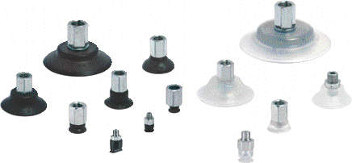
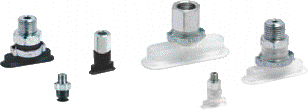
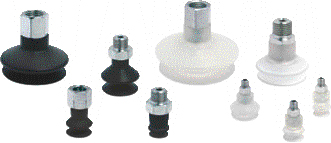

Плоские присоски (круглые) Серии VTCF Плоские присоски (овальные) Серии VTOF Сильфонные присоски (1.5 гофр) Серии VTCL Сильфонные присоски (2.5 гофр) Серии VTCN

Универсальные присоски из NBR или силикона идеальны для широкого диапазона применения.
Благодаря плоской поверхности и конструкции, обеспечивающей хорошую жесткость, они позволяют захватывать объекты за короткий промежуток времени, обеспечивать большие скорости перемещения и ускорения

Присоски изготавливаются из NBR или силикона. Имеют особую форму, позволяющую перемещать узкие и длинные объекты, такие, как трубы, профили, оконные рамы, двери и другие плоские объекты, имеющие рельефные ребра жёсткости. По сравнению с круглыми присосками они обеспечивают большую удерживающую силу при перемещении узких объектов.

Сильфонные присоски из NBR или силикона. Сильфонная модель обеспечивает мягкий котакт с рабочим изделием. Это делает присоски данного типа особенно удобными для захвата изделий с деликатной поверхностью.
Сильфонные присоски серии VTCN, изготавливаемые из NBR и силикона, являются лучшим решением для захвата изделий с неравномерными поверхностями и со значительным перепадом высоты отдельных деталей.
Исполнение с 2.5 секциями гофры обеспечивает очень мягкий контакт с объектом, что очень удобно для захвата нежёстких и хрупких деталей